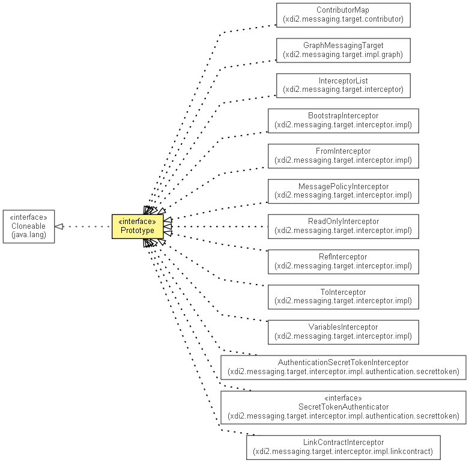

xdi2.messaging.target
Interface Prototype<T extends Prototype<T>>
- All Superinterfaces:
- Cloneable
- All Known Implementing Classes:
- BootstrapInterceptor, ContributorMap, FileMessagingTarget, FromInterceptor, GraphMessagingTarget, InterceptorList, LinkContractInterceptor, MessagePolicyInterceptor, ReadOnlyInterceptor, RefInterceptor, ToInterceptor, VariablesInterceptor
public interface Prototype<T extends Prototype<T>>
- extends Cloneable

This interface is used to mark messaging targets, interceptors and contributors that
can create an automatically configured copy of themselves, which is useful for
messaging target factories.
instanceFor
T instanceFor(Prototype.PrototypingContext prototypingContext)
throws Xdi2MessagingException
- Throws:
Xdi2MessagingException
Copyright © 2013. All Rights Reserved.